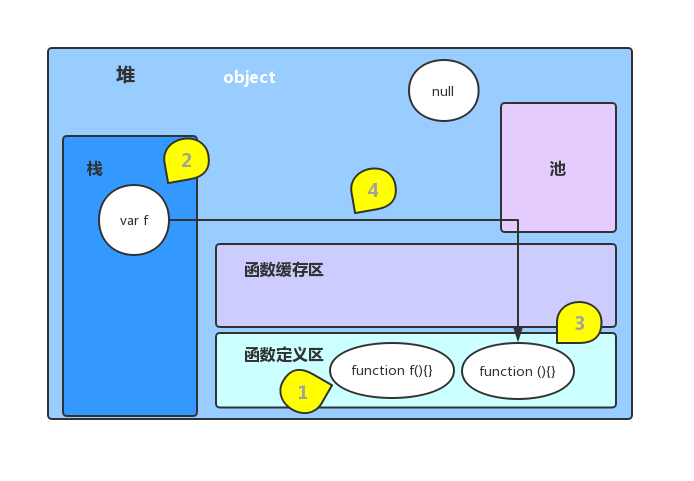
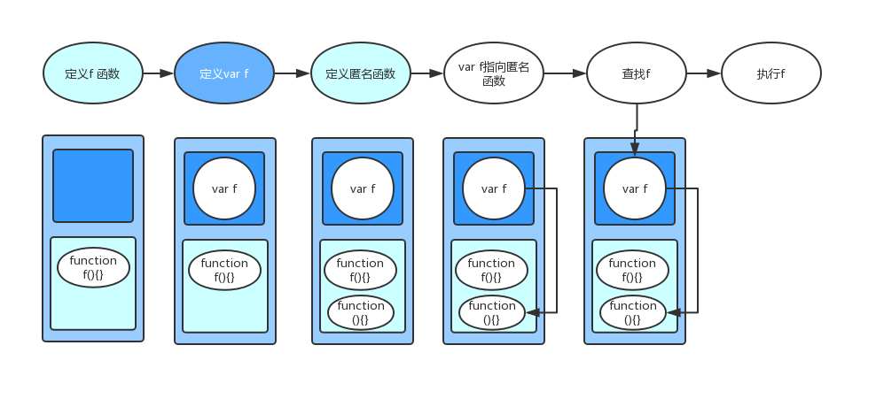

函数定义方式
函数声明
1
2
3function funcName(){
// code
}函数表达式(函数字面量)
1
2
3var funcName = function (){
// code
}构造函数
1
var funcName = new Function('x', 'y', 'console.log(x, y)');
例子
例1
1 | function f () { // 为了区分，下面把该函数叫func1 |
输入内容 f2。有人可能认为因为func2的定义在后面，覆盖了前面的func1。其实并不然，把func1和func2互换一下位置，看看输出的内容是不是和你想的一样呢～～其实也同样输出f2。
但是如果把f()提前执行呢:
例2
1 | f(); |
输出内容f1
分析
- 其实
func1和func2两种方式声明的函数是不一样的。func1声明的函数直接放在了函数定义区；而func2先定义一个变量f放在栈中，又定义了一个匿名函数放在函数定义区，再把变量f指向匿名函数。 - js是单线程的，代码是一步一步往下执行的，这句话并不完全正确。js会从上到下先把定义执行完(图片中的1，2，3)，再执行操作语句。
- 执行语句时，遇到变量先从
栈里找，如果没有该变量或者该变量没有指向其他值，继续从函数定义区里找。

所以在例1中，先定义func1在函数定义区、var f在栈、匿名函数函数定义区；将f指向匿名函数；查找f、从栈找到了f并指向函数；执行f()时会执行匿名函数，所以输出的是f2。

在例2中，先定义func1在函数定义区、var f在栈、匿名函数函数定义区；查找f、从栈找到了f但是指向其他值，所以从函数定义区里找到了，执行，所以输出的是f1
总结
- 字面量声明的函数与普通声明不同，会占用更多的内存。
- js执行顺序: 先定义变量和声明函数，再执行相关操作。
- js查找变量顺序: 先在栈中查找，再在函数定义区中查找。
延伸
- 总结第1点，会不会与性能有关？字面量声明方式虽然占用内存多，但是从总结的第3点可以看出查找速度较快。
- 总结第2点，是不是和变量提升有关？
- 栈中的变量，是否被定义、是否有指向、函数定义区是否有声明，会怎么样影响查找结果?
1
2
3
4
5
6
7
8
9
10
11
12
13
14var f;
function f () {}
console.log(typeof f); // function
console.log(f); // ƒ f(){}
var f = null;
function f () {}
console.log(typeof f); // object
console.log(f); // null
var f = undefined;
function f () {}
console.log(typeof f); // undefined
console.log(f); // undefined